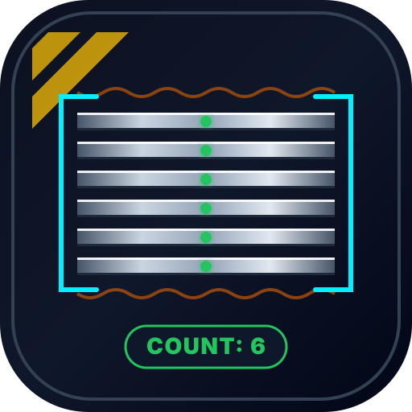

Cámara Trasera

Contador Láminas PROSelecciona un caso real del almacén para calibrar y comprobar la precisión del conteo:
Curva de brillo promedio fila por fila en el ROI con sustracción de fondo. Los puntos verdes representan picos detectados (cantos de lámina):